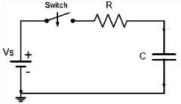
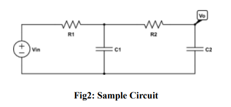
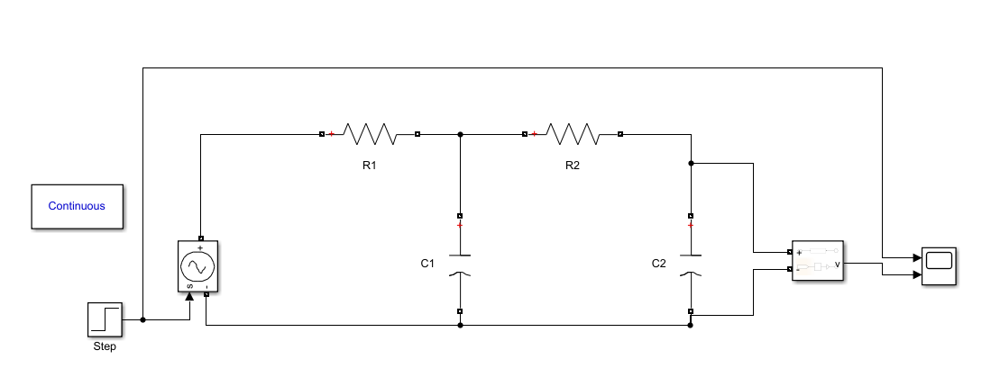
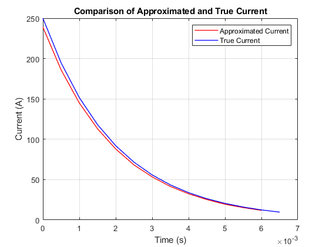
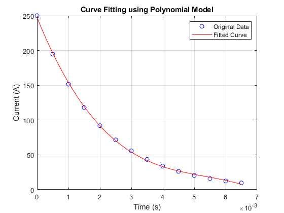
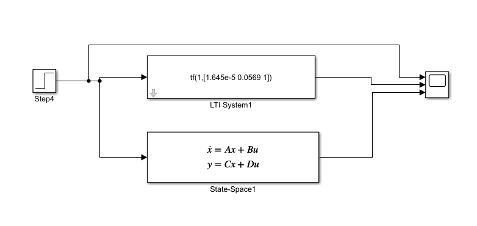
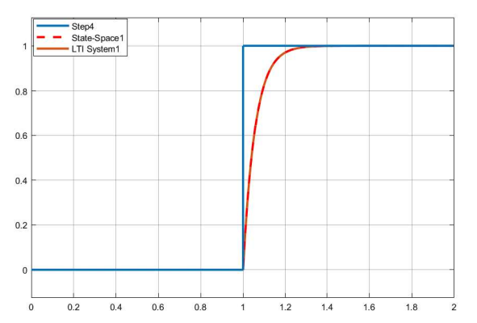
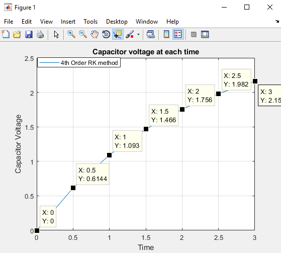
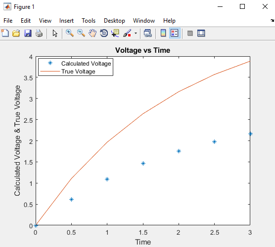

Overview
The capacitor law is differentiated in Problem 1, embedded in the circuit equations in Problem 2, and integrated in Problem 3. Together they cover the main numerical and modelling tools used to analyse dynamic circuits.
Problem statement
Real circuit data is often sampled, and circuit behaviour can be described in several equivalent ways. The project asks how accurately numerical methods recover current and voltage from samples, and whether different model forms of the same circuit give the same response.
Engineering objectives
- Estimate capacitor current from sampled voltage and quantify the error.
- Model a two-stage RC ladder as a Simulink circuit, a transfer function and a state-space system, and check that they agree.
- Compute capacitor voltage from a known current with the RK4 method.
System architecture



Methodology
- Problem 1: estimated capacitor current with the forward difference IC ≈ C·ΔV/h from samples every 0.5 ms, computed the relative true error, then fitted a third-order polynomial and evaluated it at 4 ms.
- Problem 2: derived the transfer function with KCL, G(s) = 1 / (1.645×10⁻⁵ s² + 0.0569 s + 1), converted it to state space with
tf2ss, and compared Simulink LTI and State-Space blocks driven by the same step. - Problem 3: solved dVC/dt = IC(t)/C with IC = 150·e−0.5t from 0 to 3 s using RK4 with a 0.5 s step, and compared it with the reference values.
Hardware and software
Hardware
- None. Simulation-only project.
Software & tools
- MATLAB (Control System and Signal Processing toolboxes)
- Simulink
Implementation photographs
This is a simulation project, so there are no hardware photographs. MATLAB and Simulink outputs are shown under Results.
Results






Performance metrics
2.09%
Relative error of the cubic fit at the evaluation point (4 ms)
0.4916 V
Deviation between calculated and reference capacitor voltage (t = 0.5 s)
≈ 56.6 ms
Dominant time constant of the two-stage RC ladder
Key findings
- The transfer-function and state-space models gave matching step responses, rising to 1 with no overshoot; the slow pole near −17.66 s⁻¹ dominates.
- The forward-difference current had a relative error of about 4–5% at most sample points.
- The RK4 result matched the closed-form solution very closely; the gap to the supplied reference table was a constant factor, which pointed to inconsistent given data rather than a numerical error.
Links
- GitHub repository (MATLAB code, figures and full report)